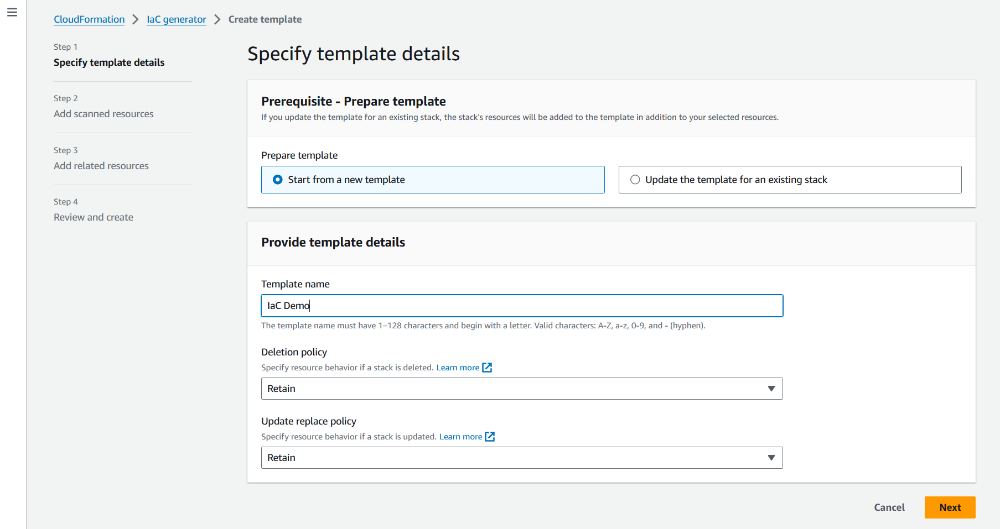
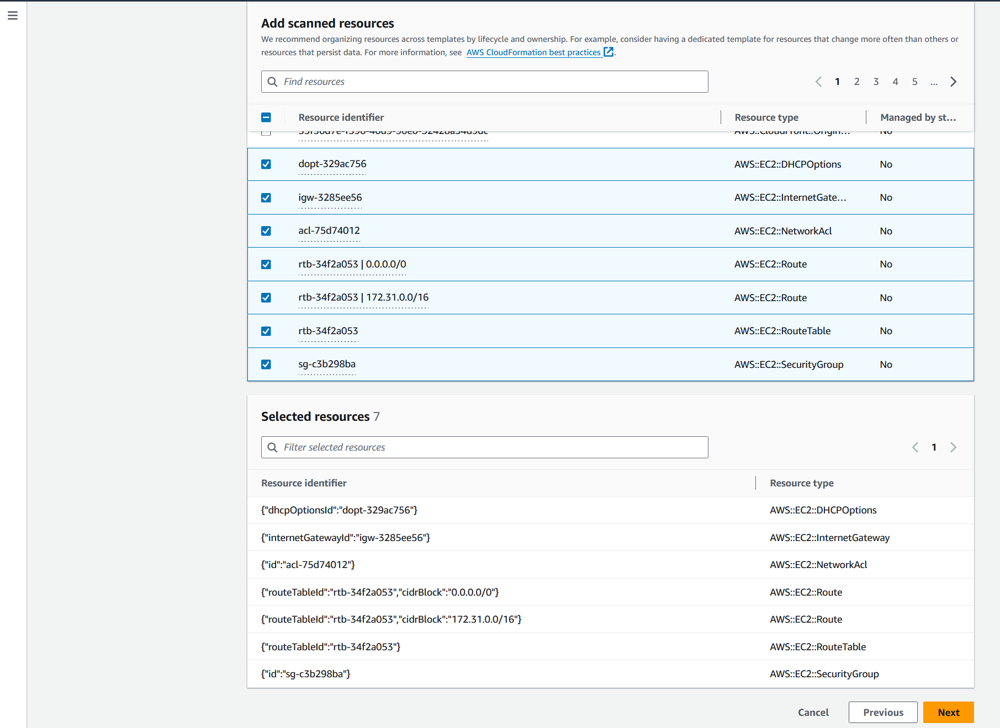

Les traductions sont fournies par des outils de traduction automatique. En cas de conflit entre le contenu d'une traduction et celui de la version originale en anglais, la version anglaise prévaudra.
Génération de modèles pour les ressources existantes
Avec le générateur AWS CloudFormation iAC (infrastructure en tant que générateur de code), vous pouvez générer un modèle à l'aide de AWS ressources provisionnées dans votre compte qui ne sont pas déjà gérées par CloudFormation. Utilisez le modèle pour importer CloudFormation ou répliquer des ressources dans un nouveau compte ou une nouvelle région.
Le processus de génération de l'iAc comprend plusieurs étapes :
-
Lancez un scan de votre compte.
-
Créez un modèle, soit à partir de zéro, soit en utilisant le modèle d'une pile existante comme point de départ.
-
Ajoutez des ressources numérisées et des ressources associées au modèle à l'aide de l'assistant d'ajout de ressources.
-
Importez les ressources à gérer CloudFormation sous forme de pile ou migrez-les vers une AWS CDK application.
La fonction de générateur iAc est disponible dans toutes les régions commerciales et prend en charge de nombreux types de AWS ressources courants. Pour obtenir une liste complète, veuillez consulter Support des types de ressources.
Rubriques
Considérations
Vous pouvez générer JSON des YAML modèles pour les AWS ressources publiées dans le CloudFormation registre, pour les ressources pour lesquelles vous disposez d'autorisations de lecture. Les modèles pour la capacité du générateur iAC modélisent les ressources du cloud de manière fiable et rapide sans avoir à décrire une ressource propriété par propriété.
Le tableau suivant répertorie les quotas disponibles pour la fonctionnalité de génération iAc.
| Nom | Valeur |
|---|---|
|
Nombre maximal de ressources pouvant être traitées lors de l'analyse d'un compte |
100 000 |
|
Nombre de scans par jour (pour les comptes contenant moins de 10 000 ressources) |
3 |
|
Nombre de scans par jour (pour les comptes contenant plus de 10 000 ressources) |
1 |
|
Nombre simultané de modèles générés par compte |
5 |
|
Nombre simultané de ressources modélisées pour une génération de modèle. |
5 |
|
Nombre total de ressources pouvant être modélisées dans un modèle |
500 |
Important
Le générateur IaC ne prend en charge que les ressources prises en charge par l'API Cloud Control dans votre région. Pour plus d'informations, voir Déterminer si un type de ressource prend en charge l'API Cloud Control dans le Guide de l'utilisateur de l'API Cloud Control
Génération d'un modèle (console)
Cette section décrit comment créer un modèle, ajouter des ressources à votre modèle et importer des ressources du modèle dans une pile à l'aide de la fonction de générateur iAc.
Pour ouvrir un nouveau modèle à l'aide du générateur iAc
Connectez-vous à la AWS CloudFormation console AWS Management Console et ouvrez-la à l'adresse https://console.aws.amazon.com/cloudformation
. -
Dans le volet de navigation, choisissez iAc generator.

-
Dans le panneau Scans, choisissez Lancer un nouveau scan. Les scans découvrent les ressources mises en service dans votre compte et la relation entre les ressources. Plus vous avez de ressources dans votre compte dans la Région, plus le scan prend du temps.

-
Dans le panneau Modèles, choisissez Créer un modèle.
-
Sélectionnez Démarrer à partir d'un nouveau modèle.
-
Dans le panneau Nom du modèle, entrez le nom du modèle généré.
-
(Facultatif) Configurez votre politique de suppression et mettez à jour la politique de remplacement.
-
Choisissez Next pour ajouter des ressources numérisées au modèle.
-
Pour ajouter des ressources numérisées à votre modèle
-
Dans la liste des ressources numérisées, parcourez la liste des ressources numérisées. Vous pouvez filtrer les ressources par identifiant de ressource, type de ressource ou balises. Les filtres sont mutuellement inclusifs.
 -
Sélectionnez la ou les ressources que vous souhaitez ajouter.
Répétez les étapes 1 et 2 jusqu'à ce que vous ayez ajouté toutes les ressources nécessaires à votre modèle.

-
Choisissez Suivant pour quitter la page Ajouter des ressources numérisées et passer à la page Ajouter des ressources associées.
-
Consultez une liste recommandée de ressources connexes. Les ressources associées, telles que les instances Amazon EC2 et les groupes de sécurité, sont interdépendantes et appartiennent généralement à la même charge de travail. Sélectionnez les ressources connexes que vous souhaitez inclure dans le modèle généré.
Note
Nous vous suggérons d'ajouter toutes les ressources associées à ce modèle.

-
Passez en revue les détails du modèle, les ressources numérisées et les ressources associées. Choisissez Modifier pour apporter des modifications.
-
Choisissez Créer un modèle pour quitter la page Révision et création et créer le modèle.

Résultats : Vous avez commencé à créer votre CloudFormation modèle et vous avez ajouté les ressources numérisées et connexes.
Pour importer des ressources à gérer en CloudFormation tant que pile
-
Choisissez Importer pour empiler, puis cliquez sur Suivant.
-
Entrez le nom de votre pile dans le panneau Spécifier la pile de la page des détails de la pile. Choisissez Suivant.
-
Vérifiez et entrez les paramètres de la pile. Choisissez Suivant.
-
Passez en revue les options qui s'offrent à vous sur la page Réviser les modifications et choisissez Suivant.
-
Vérifiez vos informations sur la page Révision et importation, puis choisissez Importer des ressources.
Résultats : Toutes les ressources ajoutées à votre modèle avec le générateur IaC sont importées dans une CloudFormation pile.
Générer un modèle (AWS CLI)
Cette section explique comment rechercher des ressources, créer un modèle, ajouter des ressources à votre modèle et le mettre à jour, et supprimer un modèle à l'aide du AWS CLI.
Pour rechercher des ressources dans votre compte
-
Pour rechercher des ressources sur votre compte dans la région sélectionnée, utilisez l'start-resource-scanopération.
$aws cloudformation start-resource-scanLa commande renvoie ce qui suit :
{ "ResourceScanId": \ "arn:aws:cloudformation:us-east-1:123456789012:resourceScan/0a699f15-489c-43ca-a3ef-3e6ecfa5da60" }
Pour décrire l'analyse des ressources du compte
-
Pour décrire l'analyse des ressources de votre compte, utilisez l'describe-resource-scanopération.
$aws cloudformation describe-resource-scan \ --resource-scan-id \ "arn:aws:cloudformation:us-east-1:123456789012:resourceScan/0a699f15-489c-43ca-a3ef-3e6ecfa5da60"La commande renvoie ce qui suit :
{ "ResourceScanId" : \ "arn:aws:cloudformation:us-east-1:123456789012:resourceScan/0a699f15-489c-43ca-a3ef-3e6ecfa5da60", "Status": "complete", "StartTime": "2023-08-21T03:10:38.485000+00:00", "EndTime": "2023-08-21T03:20:28.485000+00:00", "PercentageCompleted": 100.0, "ResourceTypes": [ "AWS::EKS::Cluster", "AWS::S3::Bucket" ], }
Pour répertorier toutes les ressources issues de votre analyse
-
Pour répertorier les ressources trouvées dans votre scan, utilisez l'list-resource-scan-resourcesopération. La réponse inclut une colonne qui indique si CloudFormation la ressource est déjà gérée.
$aws cloudformation list-resource-scan-resources \ --resource-scan-id \ "arn:aws:cloudformation:us-east-1:123456789012:resourceScan/0a699f15-489c-43ca-a3ef-3e6ecfa5da60" \ --resource-identifier exampleResourceLa commande renvoie ce qui suit :
{ "Resources": [ { "ResourceType": "AWS::EKS::Cluster", "ResourceIdentifier": { "ClusterName": "exampleResourceCluster" } }, "ManagedByStack": false { "ResourceType": "AWS::S3::Bucket", "ResourceIdentifier": { "BucketName": "exampleResourceBucket" }, "ManagedByStack": false } ] }Dans cet exemple, supposons que la sortie de
list-resource-scan-resourcesest enregistrée dans un fichier JSON nomméresources.json.
Pour répertorier toutes les ressources liées à vos ressources numérisées
-
Pour répertorier les ressources associées à vos ressources numérisées, créez des lots contenant jusqu'à 100 ressources numérisées et utilisez l'opération list-resource-scan-related-resources pour chaque lot. Sachez que la sortie peut contenir des ressources dupliquées dans la liste.
La réponse inclut une colonne indiquant si CloudFormation la ressource est déjà gérée. Il est recommandé d'ajouter toutes les ressources associées au modèle.
$aws cloudformation list-resource-scan-related-resources \ --resource-scan-id \ "arn:aws:cloudformation:us-east-1:123456789012:resourceScan/0a699f15-489c-43ca-a3ef-3e6ecfa5da60" \ --resources file://resources.jsonLa commande renvoie ce qui suit :
{ "RelatedResources": [ { "ResourceType": "AWS::EKS::Nodegroup", "ResourceIdentifier": { "NodegroupName": "exampleNodegroup" }, "ManagedByStack": false }, { "ResourceType": "AWS::IAM::Role", "ResourceIdentifier": { "RoleId": "arn:aws::iam::123456789012:role/S3Access" }, "ManagedByStack": false } ] }Note
La liste de ressources en entrée ne peut pas dépasser une longueur de 100. Pour répertorier les ressources associées pour plus de 100 ressources, exécutez l'opération par lots de 100 et consolidez les résultats.
Supposons que la sortie de
list-resource-scan-related-resourcessoit également ajoutée au fichier JSON nomméresources.json.
Pour générer un modèle
-
Pour générer un nouveau modèle sans ressources, utilisez l'create-generated-templateopération et spécifiez le nom du modèle.
$aws cloudformation create-generated-template \ --generated-template-nameTemplateNameLa
create-generated-templatecommande renvoie ce qui suit.{ "Arn": \ "arn:aws:cloudformation:us-east-1:123456789012:generatedtemplate/7fc8512c-d8cb-4e02-b266-d39c48344e48", "Name": "TemplateName" }
Pour mettre à jour le modèle généré avec des ressources
-
Pour mettre à jour le modèle que vous venez de créer, vous pouvez spécifier une liste de ressources que vous souhaitez ajouter. Dans cet exemple, nous utilisons le fichier
resources.json. Voici le fichier texte JSON pourresources.json:[ { "ResourceType": "AWS::EKS::Cluster", "LogicalResourceId":"Cluster", "ResourceIdentifier": { "ClusterName": "exampleResourceCluster" } }, { "ResourceType": "AWS::S3::Bucket", "LogicalResourceId":"Bucket", "ResourceIdentifier": { "BucketName": "exampleResourceBucket" } }, { "ResourceType": "AWS::EKS::Nodegroup", "LogicalResourceId":"Nodegroup", "ResourceIdentifier": { "NodegroupName": "exampleNodegroup" } }, { "ResourceType": "AWS::IAM::Role", "LogicalResourceId":"Role", "ResourceIdentifier": { "RoleId": "arn:aws::iam::123456789012:role/S3Access" } } ]Pour mettre à jour votre modèle, utilisez l'update-generated-templateopération, spécifiez le nom de votre pile et spécifiez votre fichier texte pour ajouter des ressources à votre modèle. L'
--cloud-formation-template-configurationoption n'étant pas incluse, lesDeletionPolicypolitiquesUpdateReplacePolicyet sont définiesRetainpar défaut.$aws cloudformation update-generated-template \ --generated-template-nameTemplateName\ --add-resources file://resources.jsonLa
update-generated-templatecommande renvoie ce qui suit.{ "Arn": "arn:aws:cloudformation:us-east-1:123456789012:template/equipment-sorter", "Name": "TemplateName" }
Pour supprimer le modèle spécifié par nom de pile
-
Pour supprimer votre modèle généré, utilisez l'delete-generated-templateopération et spécifiez le nom ou l'ARN de génération du modèle.
$aws cloudformation delete-generated-template \ --generated-template-nameTemplateName
Générez et gérez des modèles à l'aide du AWS CDK
AWS Cloud Development Kit (AWS CDK) Il s'agit d'un framework de développement de logiciels open source que vous pouvez utiliser pour développer, gérer et déployer des AWS CloudFormation ressources à l'aide de langages de programmation courants.
La AWS CDK CLI fournit une intégration avec le générateur IaC. Utilisez la cdk migrate commande AWS CDK CLI pour générer un AWS CloudFormation modèle et créer une nouvelle application CDK contenant vos ressources. Vous pouvez ensuite utiliser le AWS CDK pour gérer vos ressources et les déployer sur AWS CloudFormation.
Pour plus d'informations, consultez la section Migrer vers AWS CDK dans le guide duAWS Cloud Development Kit (AWS CDK) développeur.